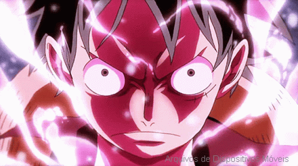

Monkey D. Luffy
Monkey D. Luffy, também conhecido como Luffy Chapéu de Palha ou Chapéu de Palha, é um pirata e o protagonista do anime e mangá One Piece. Ele é o fundador e o capitão do cada vez mais infame e poderoso Piratas do Chapéu de Palha, bem como um de seus principais lutadores. Seu sonho de vida é se tornar o Rei dos Piratas, encontrando o lendário tesouro deixado pelo falecido Rei dos Piratas, Gol D. Roger. Ele acredita que ser o Rei dos Piratas significa ter a maior liberdade do mundo.

Luffy Original
Está é a versão do luffy original, antes dele criar seus gears.
Gear Second
Gear Second é uma técnica que aumenta a força, a velocidade e a mobilidade do usuário. Foi visto pela primeira vez na luta de Luffy contra Blueno.Esta técnica envolve Luffy acelerar o fluxo do sangue em todas as partes do corpo ou selecionados, a fim de lhes fornecer mais oxigênio e nutrientes, tornando-o muito mais rápido e mais forte.

Gear Third
Gear Third é uma forma poderosa na qual Luffy morde o seu polegar e em seguida o sopra, fazendo com que seu braço infle. Ele é, então, capaz de transferir o ar através de todo o corpo. Luffy sopra tanto ar no seu corpo que, quando ele está todo focado em um único membro, torna-se do tamanho equivalente (ou superior) que o de um gigante.

Gear Fourth Boundman
Luffy cobre seus braços com Haki do armamento antes de morder seu antebraço. Semelhante à forma como ele ativa o Gear Third, ele sopra uma incrível quantidade de ar em seu corpo, mas desta vez ele infla sua estrutura muscular antes de distribuir o ar em todo o seu corpo, com ênfase na sua metade superior. A primeira forma do do Gear Fourth se chama Boundman Boundman. As proporções de Luffy ficam deformadas e seu corpo se torna muito maior em tamanho, com os braços, tronco superior e pernas revestidos com Haki do armamento(tipo de poder do anime). Esta forma deixa Luffy muito mais forte e ágil.

Gear Fourth Tankman
Durante sua batalha contra Charlotte Cracker, depois de consumir grandes quantidades de biscoitos e, consequentemente, crescer para um tamanho enorme, Luffy revelou uma outra forma do Gear Fourth conhecida como Tankman (タ ン ク マ ン Tankuman). Nesta forma, ele se assemelha a uma bola com proporções exageradas: enquanto seus braços e pernas são ligeiramente pequenos em relação ao corpo, seu torso com Busoshoku Haki-revestido torna-se muito maior e completamente redondo, embora ainda há músculos nos braços e no peitoral.
Gear Fourth Snakeman
Nesta forma do Gear Fourth, Luffy ganha um aumento significativo na velocidade e capacidade de usar "Python" para mudar a direção de seus ataques, o último dos quais ele também possui em sua forma Boundman. No entanto, Snakeman permite que seus ataques acelerem continuamente o tempo que duram, permitindo que Luffy não apenas pressione um ataque mais ferozmente em um oponente capaz de se esquivar, mas também aumente a velocidade e poder do ataque até que ele finalmente caia no alvo, dando oportunidade de atacar qualquer área de um adversário com facilidade. Esta forma se concentra em lidar com oponentes ágeis que se especializam em esquivar-se e tem um alto nível de Haki da obrsevação.